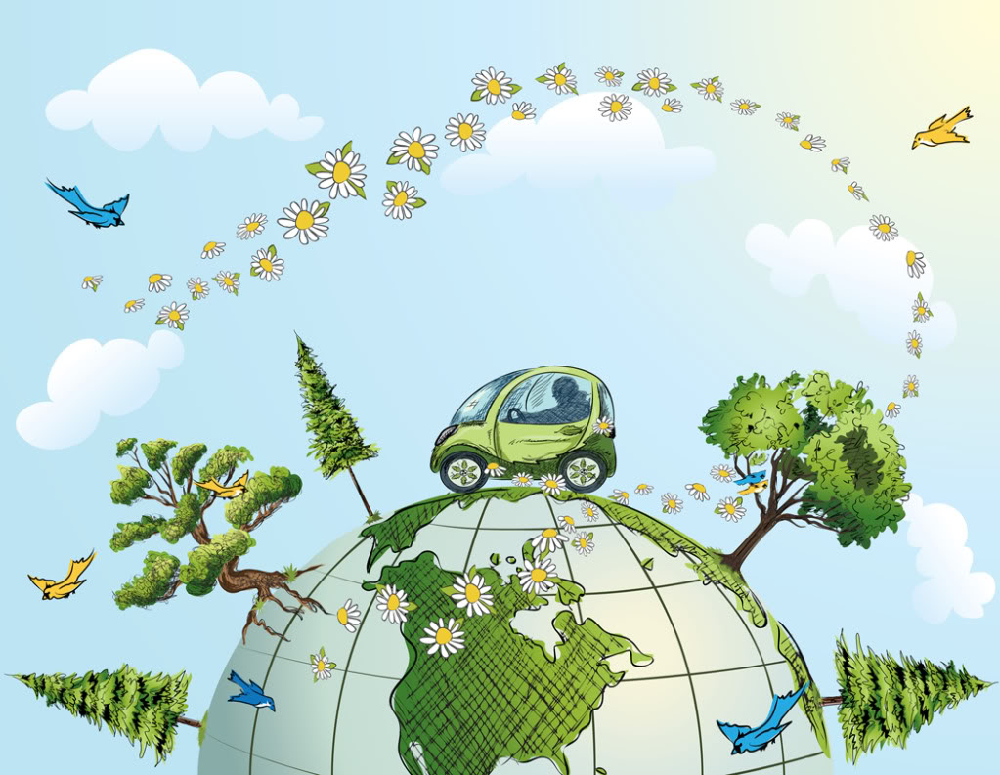

Environmental Restauration and Rehabilitation Issues Websites
Across the world, years of unsustainable activities have polluted the aquatic, marine, and terrestrial environments that support our economies and societies and lead to diversity of wildlife and plants.
Environmental Restauration and Rehabilitation comes to help restore degraded resources, protect ecosystems, prevent future damage, enhance the quality of resources and prevent or decrease pollution.
Some websites for more informations: 